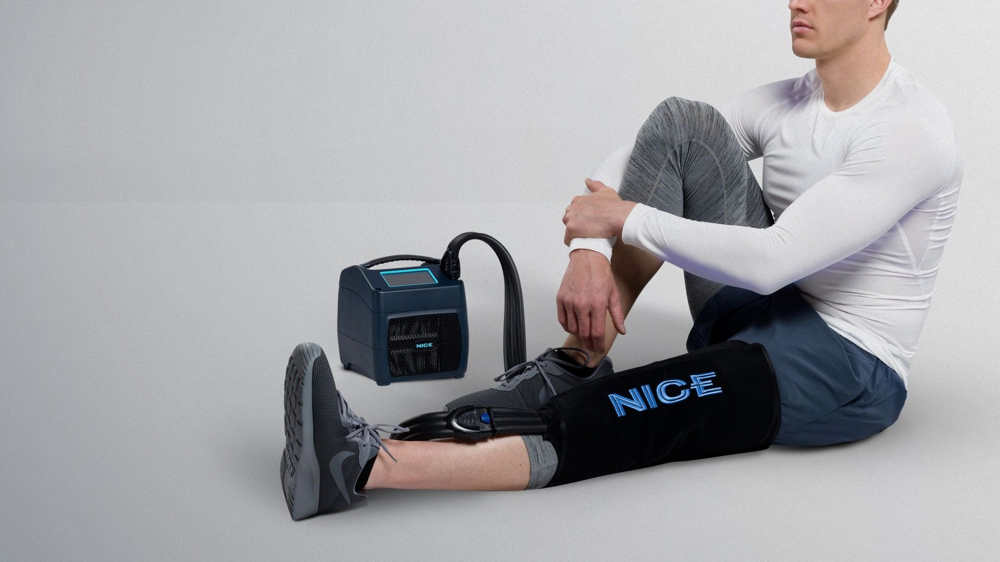
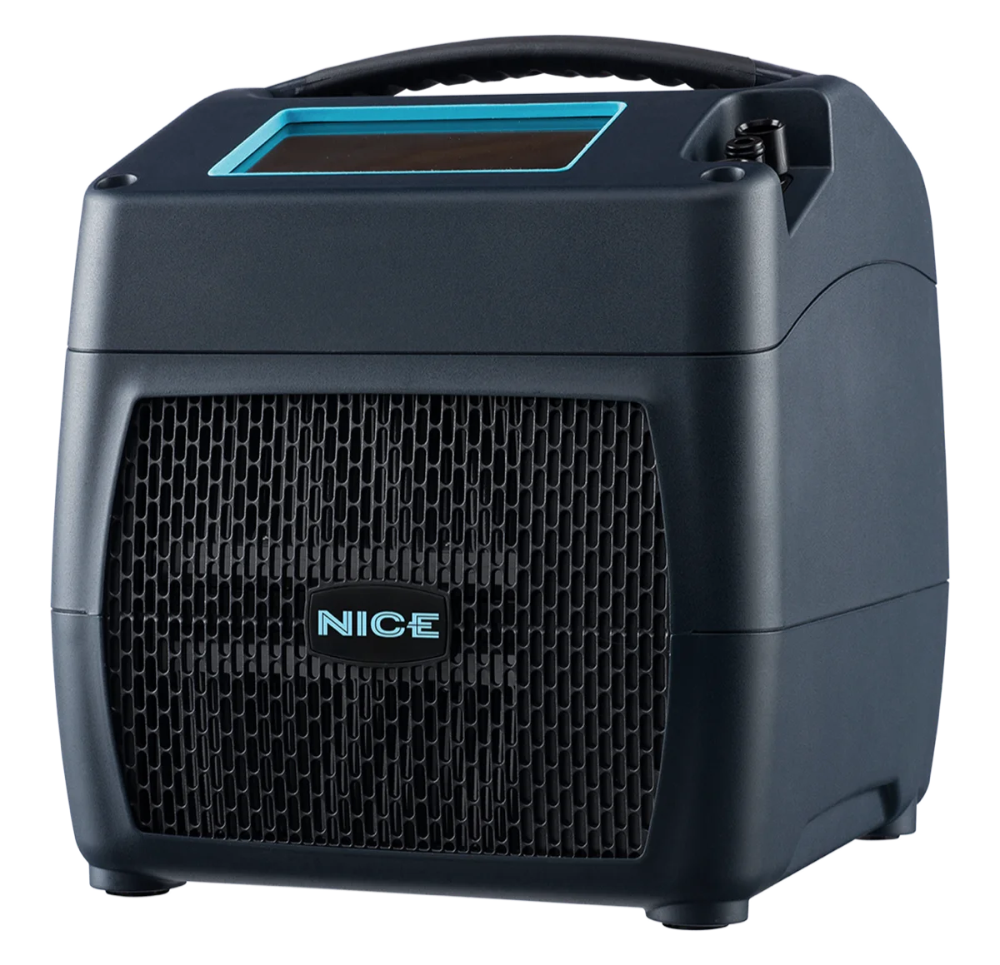

Recovery equipment, delivered and set up at home.
Ortho Flow Recovery brings advanced cold and compression therapy to your home, with hands-on setup, dependable support, and service throughout your recovery.
Why patients choose Ortho Flow
White-glove support from start to finish.
We deliver the equipment, set it up in your home, walk you through how to use it, and stay available throughout the rental so you always have someone to call.
Modern pain-management technology.
NICE1 combines controlled cold therapy and programmable compression in one compact system, helping patients manage post-operative discomfort without the constant hassle of traditional ice.
Recovery made easier at home.
No ice runs, no equipment pickup, and no return shipping. Everything is brought to you, supported throughout your rental, and collected when you're finished.
The NICE1 cold therapy and compression system
NICE uses advanced technology to greatly improve the convenience of cold + compression therapy. NICE eliminates inconvenience by delivering precise cold therapy without the need for ice. The programmable pneumatic compression is proven to reduce edema and speed recovery. NICE integrates these highly effective therapies in a small (8x8x8 inches) and lightweight (9lb) package with an easy-to-use touch screen interface.
Wraps currently stocked: Foot and Ankle, Knee, Lower Leg, Hip, Lumbar, Cervical, Total Shoulder, Elbow, Hand and Wrist.

How it works
1. Tell us your timeframe.
Let us know when your procedure is coming up, and we'll confirm availability and coordinate the next steps.
2. We deliver before surgery.
We schedule delivery around your procedure date, with flexible timing so your equipment is set up and ready before you need it.
3. We stay in touch.
We check in during your recovery to make sure everything is working properly and answer any questions that come up.
4. We pick it up.
When you're finished, we coordinate a convenient pickup directly with you. No return shipping or extra logistics.
What patients say
★★★★★
"For me it was the level of caring that John showed. He came to the house and taught me how to use the machine. He checked up on me throughout my recovery. I could not have asked for a better experience."
Natacha
★★★★★
"John delivered five-star concierge service. He came to our home to set it up and quickly answered any questions that came along over the whole two months we kept the machine. The machine is the only way to go for post-op knee surgery. So convenient and easy to use."
Anonymous patient
★★★★★
"The whole process from beginning to end. I was contacted prior to surgery. The machine was delivered before my procedure with an explanation of how it worked and what it would do for my recovery. When I was finished, it was picked up from my home."
Elizabeth
Simple, all-in pricing
Two weeks minimum at $25 a day, delivery and pickup included. Need it longer? As low as $150 a week after that. Any fit or equipment issue during your rental is serviced at no additional charge.
Built around the part nobody else handles
Ortho Flow was created to bring a higher level of service, convenience, and pain management to post-operative recovery at home. After seeing many innovations in the orthopedic market, we believed there was still an opportunity to better support patients once they leave the physician's office. By acting as an extension of the care team, Ortho Flow helps patients manage their post-operative needs with personal attention, modern therapy options, and support throughout recovery.
Read Our StoryReserve a unit
Tell us your general timeframe and we will confirm availability and delivery.
Please do not include medical information in this form. We will contact you to discuss any specifics by phone.